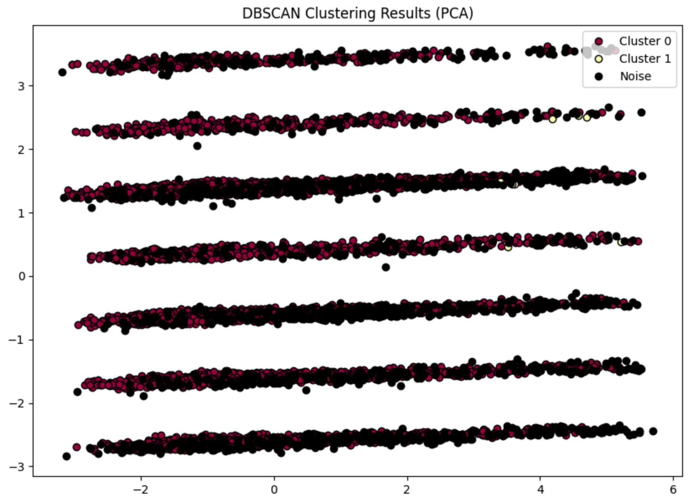
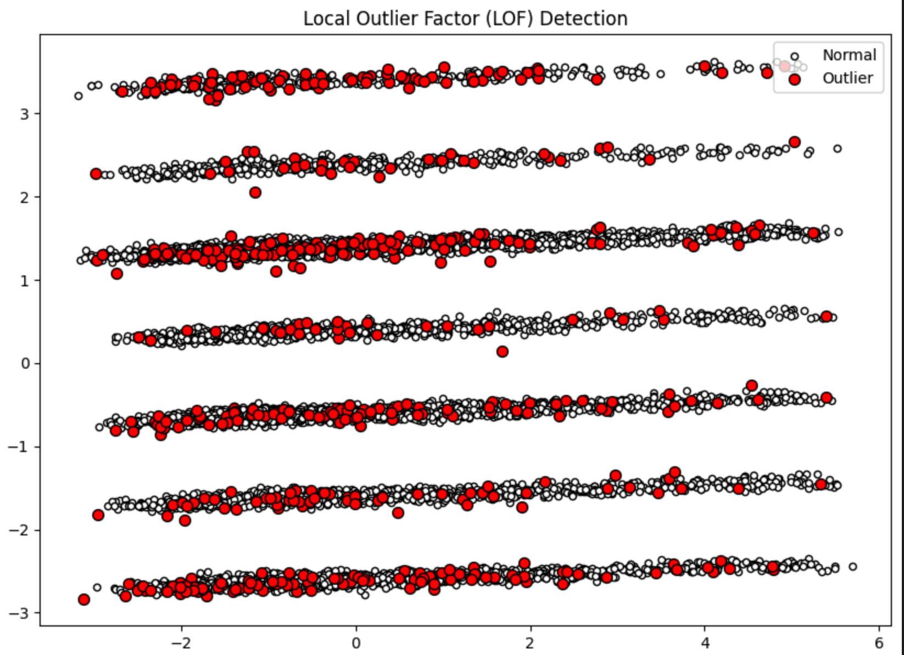
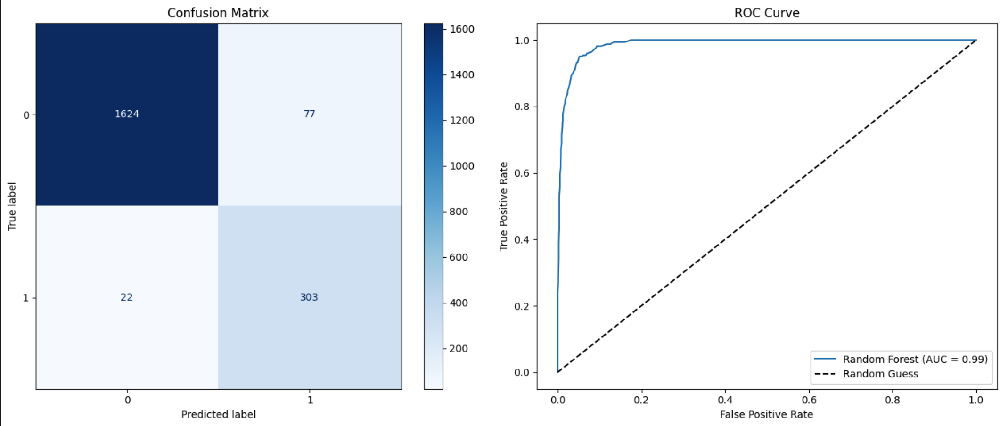

Research Project at SFU
Implemented DBSCAN to identify density-based clusters and outliers.
Parameter tuning(eps) was guided by a k-distance graph, which showed an elbow at 4.0.
Using this as a baseline, we refined the model to eps=3.0 and min_samples=30.
To visualize the results, we used PCA to project the data into 2D.
The model achieved a silhouette score of 0.123, showing that dense customer groups are successfully
distinguished from noises.

Applied LOF to detect anomalies based on local density deviations, configuring the model
with n_neighbros=20 and a contamination rate of 5%.
Using PCA for visualization,
I observed that outliers were flagged in low-density regions and near cluster boundaries.
Although some outliers appear to overlap with normal data in the 2D projection,
this is expected as LOF identifies local outliers which could be subtle anomalies,
as well as the inevitable information loss from dimensionality reduction.

Trained a Random Forest Classifier using 5-fold cross-validation to predict customer churn. Hyperparameter Tuning via Grid Search revealed that the default model was already robust, and the tuning showed only marginal improvements. However, incorporating feature selection with MI optimzed the model slightly. Final validation using Confusion Matrices and ROC curves confirmed that the model has the strong capability to distinguish between churned and existing customers.

SOURCE
STACK
DBSCAN, LOF, Random Forest
DURATION
2025.10 - 2025.11